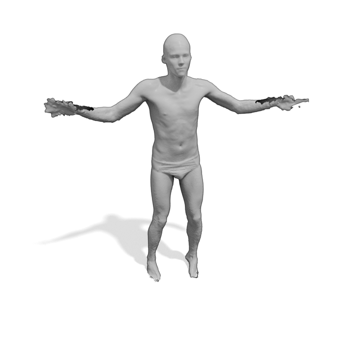
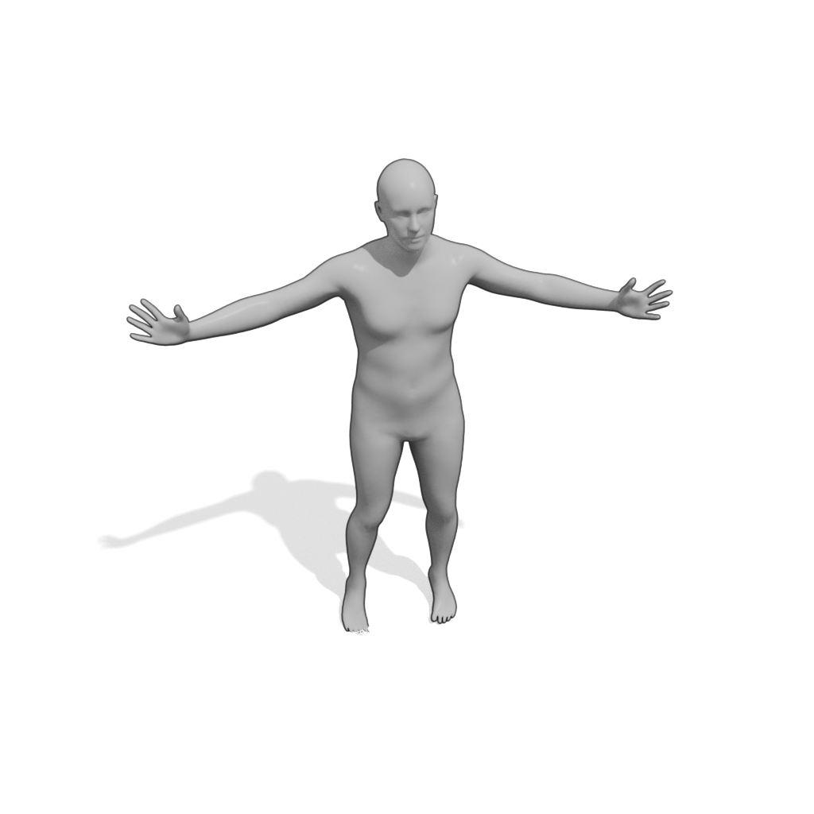
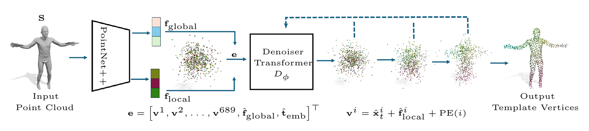
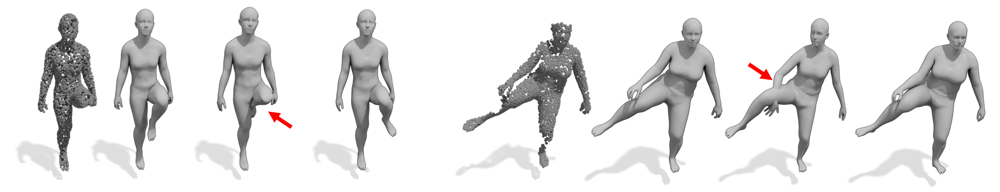
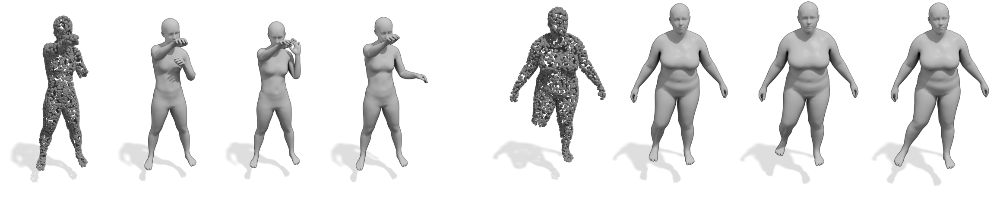

German Conference on Pattern Recognition · GCPR 2026
Ordered Diffusion for 3D Human Registration
1University of Tübingen · 2Tübingen AI Center · 3Technical University of Munich · 4Munich Center for Machine Learning · 5Max Planck Institute for Informatics, Saarland Informatics Campus

Given an input scan
we use a 3D diffusion model to recover a point cloud that fits the target while respecting a semantic order of the points

which lets us solve for template registration, while retaining the uncertain nature of the task
Abstract. 3D human registration has historically been treated as a regression task, assuming a unique ground-truth alignment exists between the template and an input point cloud. In reality, acquisition noise, occlusions, and unknown soft tissue dynamics introduce inherent ambiguity into human scans. Regression-based methods consequently converge to an average prediction, often failing to represent a plausible geometry. In our work, we embrace such uncertainty by modeling the registration as a distribution of alignments. We propose ODin, which formulates registration as a 3D diffusion process that generates a point cloud aligned with the target geometry while preserving template semantics through consistent point ordering. To achieve this, ODin relies on global, local, and positional conditioning, guiding each point to its correct location. Our experiments demonstrate that such a generative formulation not only outperforms its regression-based baseline, but also establishes a new state of the art, surpassing highly engineered methods while reducing the registration time by two-thirds.
A scan admits many alignments. Regression returns their average — a body nobody has.
Sensors are noisy, limbs go missing, soft tissue moves. Enstablishing a ground-truth dense correspondence between human models is an ill-posed problem. Collapsing all of that into a single prediction is what makes deterministic methods glue a missing leg to the torso, or push an arm through a hip.
ODin proposes to model the task as a generative one. Registration becomes sampling: start from Gaussian noise, denoise toward the observed geometry, and read off one plausible alignment. Draw again and you get another.
Point-cloud diffusion models reconstruct shape: any point may end up anywhere on the surface. In registration a point i must land where template vertex i belongs.
ODin fixes the order with geometric conditioning at three scales.
f_global ∈ R^256 · one extra token
Taken from the bottleneck of an encoder-decoder PointNet++. It gives every point a coarse sense of where the body is.
f_local ∈ R^128 · nearest neighbour, every step
Per-scan-point features from the final PointNet++ layer. At each step every noisy point takes the feature of its closest scan point — a lookup that is close to random early on, but decisive late.
PE(i) ∈ R^1024 · d = 1024
The sinusoidal encoding of the vertex index: the point's identity on the template, and the reason the output comes back ordered rather than merely body-shaped.



The design is not specific to people. Nothing in the conditioning assumes a parametric body model — only that the template has a fixed, meaningful vertex order — so the same recipe should carry to other classes, including those without a SMPL-style prior.
The diffusion toolbox is largely untouched here: score distillation, guidance, and non-isotropic noise schedules all have obvious roles to play in registration. On the other hand, ODin expects a segmented human. Heavy clutter — furniture, large floor regions — would break it, and more structured features are the likely fix.
@inproceedings{masiero2026odin,
author = {Masiero, Mattia and Petrov, Ilya A. and Cremers, Daniel
and Pons-Moll, Gerard and Marin, Riccardo},
title = {Ordered Diffusion for {3D} Human Registration},
booktitle = {DAGM German Conference on Pattern Recognition},
publisher = {Springer},
year = {2026},
}